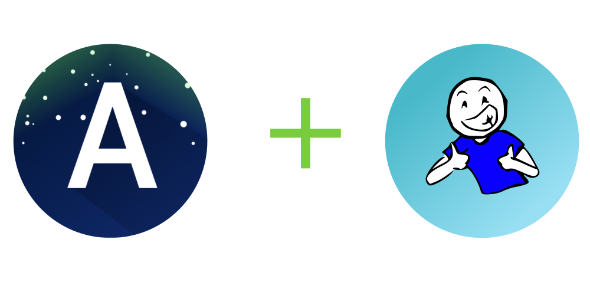

NOW LOADING
Back
LOGIN
Log in to Aurora using your STiBaRC account
Login
Aurora connects to the STiBaRC services; by using it, you agree to STiBaRC's
Privacy Policy
and the
Terms of Service
.

Back
LOGIN SUCCESSFUL!
You have logged in to Aurora with your STiBaRC account.
You can now return to the
feed
.